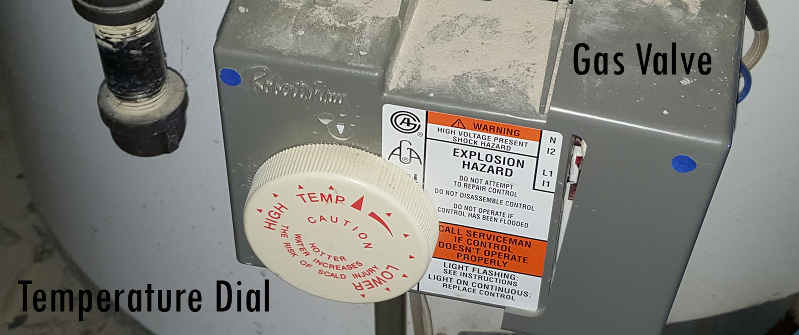
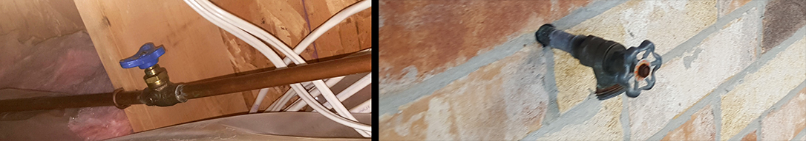
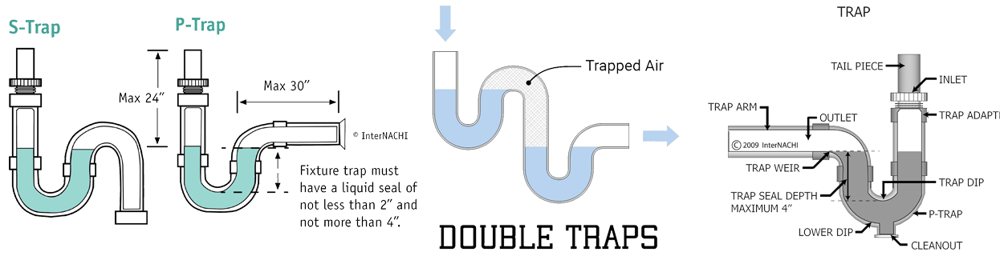
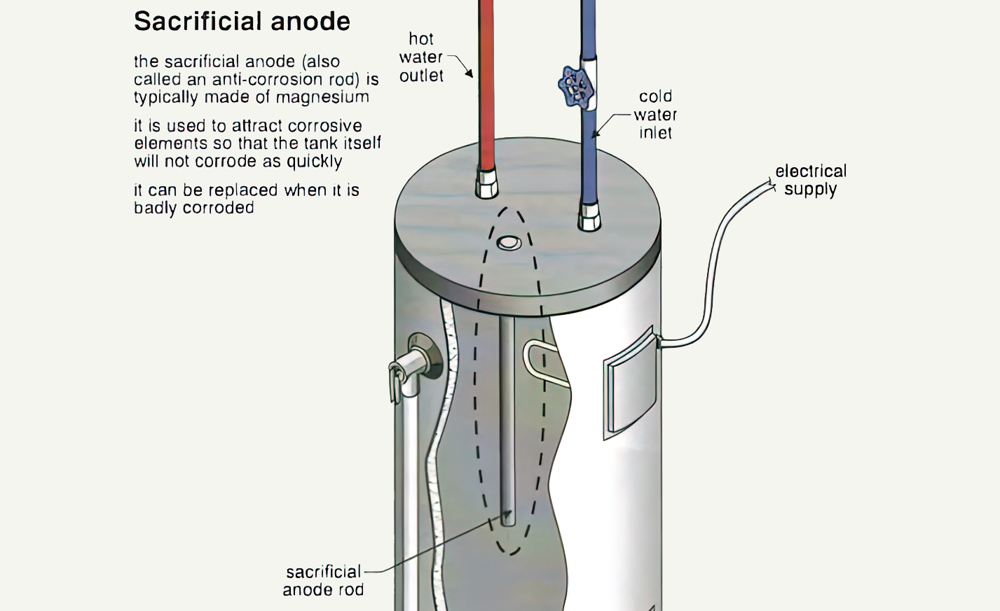

-
Plumbing Maintenance Tips
Some general plumbing advice for new home buyers.
Is your hot water too hot?
Why? If you have small children, and you find the hot water for the baths or sinks is too hot, there is an easy fix. Sometimes, the previous owner may have left the water temperature of the hot water tank set too high.
How? At your water tank (gas fuelled) there should be a gas valve at the bottom and on the valve, there should be a dial similar to the photo below. Just turn the dial o a lower temperature setting.
Winterization of hose bibbs
Why? If you have an older hose bibb, you should “winterize the hose bibb”.
How? Prevent water in the pipes from freezing, expanding, and cracking the hose bibb water pipe. Before winter arrives, you should follow some easy steps.- Shut off the water valve in the house connected to the outside hose bibb.
- Remove any attachments to the hose bibb.
- Open the hose to remove any water in the pipe, then close the valve.

The photo shows a shut-off valve in the house for the outdoor hose bibb.
-
 Homeowner Tips
Homeowner Tips Frost Free Hose Bibb
Frost Free Hose Bibb Upgrade your Hose Bibb
Upgrade your Hose Bibb
-
Upgrade your old hose bibb
Why? In Canadian winters, your old outdoor hose bibb can freeze with water, expand and then crack the piping. One way to avoid this is to install a "Frost-Free Hose Bibb". The homeowner can turn off the hose bibb as normal, but it moves the shut-off valve of the hose bibb inside the house, so there is no water exposed to the outside to can freeze the water.Integrated hose bibb with vacuum breaker. Avoiding water contamination in the outdoor hose bibb. The hose could be submerged in water, and under certain circumstances, could result in water contamination. Installing a backflow preventer device (atmospheric vacuum breaker) in the faucet adds a level of protection against contaminated water coming back into the home.
-
Why do my water pipes make a banging noise?
Why? One possible reason is water hammer. When a valve is closed quickly, the water hits the valve hard and bounces back, creating a vacuum. The vacuum in turn attracts the water back to the closed valve, hitting it again. This reverberation sounds like a hammer hitting a metal pipe. It also may cause loose pipes or leaks.
How? There are possible fixes for the water hammer.A) Extend vertical pipes at least 12”. This allows for a cushion of air to shock absorb the water flow.
B) Anti-water hammer arrestors. These devices have a small diaphragm tank with air acting as an air cushion. -

Water Hammer
-
Problems with some sink traps
- In the home, there should only be “P” traps. A trap keeps sewer gases from entering the home. Some fixtures may have traps that are called an “S” trap, as they resemble the letter “S”. The design of an “S” trap can lead to siphoning of the water in the trap, and letting sewer gases enter the home.
- Many kitchens or bathrooms may have double sinks. Each sink will have a trap, but you may notice some installed with “double trapping”. This is where one trap is connected directly to the next trap. This can result in clogging of the trap because the velocity of the water has been reduced to the point that solids can stop moving at the second trap. Remove, if you have a double-trapped drain.
- Install new traps with a cleanout at the bottom of the trap. This makes it much easier to clean clogged traps.

-
What is this on the side of your water tank?
If you have a water tank, you should know what this is and what it does.
Why? Because it is a safety device. This is called a temperature/pressure relief valve or TPR.
This valve will automatically open and release pressure/water from the water tank if the temperature or pressure exceeds 210°F or 155PSI.
The reason you need this long tube (called discharge pipe) is that you want the hot steam/water to be directed down to the floor and not at someone. This tube should be close to the floor and not more than 6" from the floor. Make sure there is a tube and it is not capped.
The TPR does have a manual mechanism. It is good practice to occasionally test the valve yourself to make sure it is not stuck. (Put a bucket at the bottom to catch any water.
Warning: A water tank can overpressurize, and this can lead to a very dangerous situation called superheated water. -

TPR Relief Valve
-
Can you extend the life of your water tank?
If you have a water tank, did you know that there is a replaceable part that can extend the life of your water tank? It's called a Sacrificial Rod, located on the top of the tank. The rod can be removed and replaced with a new rod.
Why? Constant fresh Water in the tank can corrode the tank over time. A sacrificial rod made from magnesium is inserted into the water, so the water can “attack” the rod instead of the tank to corrode. Over time, the rod will erode and thus need to be replaced. If the rod is not replaced, then the water will eventually “attack” and corrode the tank. -

Sacrificial Rod
-
Older houses with no venting?
How do you know? When you run water from a fixture and the water drains, you may not have proper venting if there is a gurgling noise at the end. You need venting for fixtures, so air can escape, and water/waste can drain. The noise is from water being pulled from the trap via siphoning because of the lack of venting in the system.
How? One inexpensive solution would be to add an air admittance valve. Air admittance valves work based on differences in pressure from the air in the surroundings to the air in the piping. Negative pressure opens the valve and lets the air into the drain, positive pressure ensures sewer gases do not escape. This device helps eliminate the siphoning of the traps. But unlike a proper vent, it does not allow sewer gases to escape out of the house.
-
Additional Quick PlumbingTips
-
Under normal atmospheric pressure water turns to steam at its boiling point of 100°C (212°F). If you change the pressure, you change the boiling point of water. Water tanks are pressurized, if you increase the pressure in the water tank, the boiling point of water also increases beyond 100°C. If not stopped it becomes Superheater water where it is still a liquid even after it reaches its boiling point.
What is the danger? If there is a puncture in the tank, the release of the highly pressurized water into standard atmospheric pressure changes immediately creates steam, along with a massive amount of energy and it creates a "rocket effect" for the tank. The water tank can explode into the air like a rocket out of the house.That sound could be telling you that the sink drain does not have proper venting. Proper venting of the pipes allows the air pressure in the system to be neutral and allows the proper flow of water. It may be difficult to add proper venting to the outside, so a quick fix is to install an air admittance valve, which is also discussed on this web page.
Water pressure is important for the good flow of water for normal tasks around the house. However, if you live in a multiple-story house, especially those with 3 stories, height hurts water pressure. For every 2.31 feet, you need 1 PSI to move water up. If you already have lower-than-average water pressure entering the house, combined with height and pipe size, you could have much lower water pressure coming from faucets and showers on the higher floors.
Almost every household will experience some sort of flooding from a broken faucet, pipe, or valve. If that happens at a sink, your first option is to shut off the water under the sink using the hot or cold shut-off valves. All other water leaks should be shut down from the main water valve.
{kind=link}